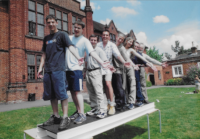
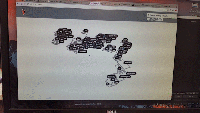

Career Profile
Andrew James Potter I majored in Physics. I have worked as a developer and in particular as a Ruby-on-Rails developer. My main interest is education and I like to teach others the knowledge I have learnt myself. I have also tutored Mathematics privately. I also excel with technology. When I was 14 I emailed Nintendo asking what I needed to learn to make games. So from an early age I developed a strong interest in technology and began by learning the C++ programming language at approximately the age of 14 and learning GNU/Linux from the age of 15. I love pentesting with Kali Linux and Metasploit (ethical hacking). I am also fascinated by digital art creation in 3d and 2d and the application of Physics and Mathematics to create interactive art like videogames and simulations. I eventually developed a love for the Ruby programming language and in particular Ruby-on-Rails. I have developed a 3d Map App using Unity3d for iOS/Android/OSX/Windows 10. I discovered three confirmed bugs in Unity3d, which I was rewarded for by Unity. I am an active member of both the Ruby and the Elixir meetup in Cambridge, which I am in the process of reviving and organising meetups. I have coached minority groups how to code. I am working on a community scaffolding project which has a focus on education and free courses called dinarly.
Work
Web Developer, Biodiversity Informatics Remote work; with visits to the office fortnightly. I proposed that we switch to Docker for local development. I introduced the use of Kali Linux and Metasploit for pentesting our websites. TDD, Agile development. Work on existing projects and also developing new solutions with the Informatics programme. This involves problem solving as well as thinking creatively to develop the end product. This includes work on Protected Planet - an interface for The World Database on Protected Areas (WDPA) - the most comprehensive global database on terrestrial and marine protected areas. Using React.js, Sidekiq, PostgreSQL, GDAL, PostGIS, Mapbox, Redis, Elasticsearch, Amazon AWS S3, Leaflet, jQuery, Atom, vim, tmux, iTerm, Google Analytics, GitHub, Slack, Skype, Trello, Office 365, Teamweek, Toggl, Dropbox. Development using GitHub, making Git pull requests, Ruby-on-Rails; adding fields to existing tables using migrations, use of Action Mailer to send email notifications, detecting modification to individual attributes to trigger email notifications, using byebug, coding rake tasks to import CSV seed data into a database, handling whitespace in CSV files, optimisation of code based on feedback, extracting the required information from each object and then returning an array which is sent to the frontend, writing tests, regression testing, fixing code which has broken, comparing JSON output to find regressions, using Travis CI, using Grape, Sinatra, RABL for a geospatial REST API, to extend the API and testing this using Postman, using Ruby metaprogramming to write tests for different attributes in a REST API, implementing the storing and accessing of data hashes using Redis where a database table is not appropriate, adding dynamic statistics.
ICT Assistant and Unity3d/Ruby-on-Rails Developer Unity3d development of multi-platform school map App, development and deployment of Health & Safety Rails App, administering Moodle Virtual Learning Environment, school website content management using WordPress, installation and configuration of a GitLab server. Serving students and teachers, Spiceworks; issue ticket and tracking system, network cabling, re-configuring graphics cards, installing computers, Active Directory, Exchange, imaging machines, desktop roll-out, experience using file servers, installing and configuring VoIP software, writing how-to guides for various tasks, backup and restore (imaging) of laptops, Visual Basic programming; converting data from SIMS to Splicecom phone system, administration of examination software, logging calls with support tickets, managing Kerboodle accounts, managing disk space quotas, Papercut printer management, remote licensing of software, ABTutor remote control of machines, configuring Eclipse IDE for Python and Java development by the students, remote desktop control of servers (RDP).
Ruby-on-Rails Developer fixing bugs in Ruby-on-Rails Web Apps for clients based in France and Israel, debugging code to more advanced skills. Familiarity with Ruby, JavaScript and HTML5/CSS3. Time management. Writing code in Ruby and JavaScript. Familiarity with Git and merging code conflicts. Familiarity with Jenkins. Fixing bugs in CSS3 code. Using JIRA.
Sorting out inventory. Customer service and deliveries.
Stock auditing, counting and keeping track of stock, level of responsibility. Communication with customers, introducing and selling products, till work. Working in a team, communication with workers.
Knowledge of products and selling products.
Projects
A list of side projects (in chronological order)
{kind=link}


{kind=link}

{kind=link}
Reference
Reference for Andrew Potter
To whom it may concern. Reference for Andrew Potter.
Andrew has worked with us for four years now, joining us part time initially and working up to a 0.8 contract latterly. Andrew is a conscientious, willing, polite and cooperative member of our IT support team. He is keen to learn new skills as well as practising his well developed programming skills. He has been responsible for IT support in our fully wireless BYOD environment and has shown himself to be responsive, adaptable and effective in resolving a whole range of issues, such as administering the VLE and VLE outreach, fixing students laptops and problem solving computer and projector issues around the site. He has trained teachers in the use of the VLE. He communicates well with a variety of audiences and has shown himself to be persistent and determined in addressing the concerns of our users. Andrew has used his programming skills to good effect and has designed and built a Ruby-on-Rails (version 5) WebGL 3d Map App of the school which is published on GitHub https://github.com/YateleySchool/YSMap3d-Rails. He also designed and built a Ruby-on-Rails (version 4) Work Experience database system, which helped our work experience manager immensely. I can recommend Andrew to you without reservation.
Kind regards,
Mark Jackman
Headteacher
Yateley School